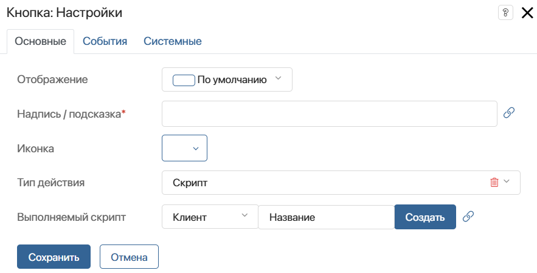
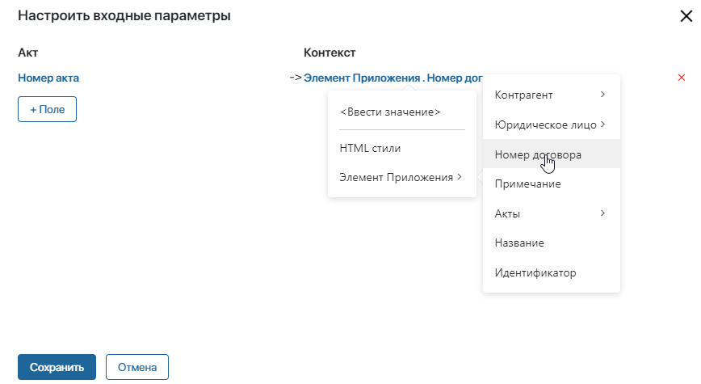
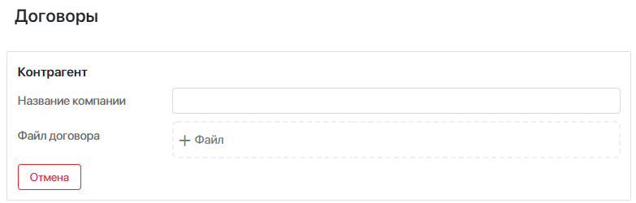

Данный виджет позволяет добавить кнопку на страницу, форму приложения или задачи. С помощью скрипта можно определить поведение кнопки при нажатии.
Чтобы разместить виджет, перетащите его с правой панели дизайнера интерфейсов на поле для моделирования или нажмите кнопку + Виджет. Подробнее читайте в статье «Шаблон формы». Затем выполните настройку в открывшемся окне.
Вкладка «Основные»

- Отображение — выберите внешний вид виджета;
- Надпись/подсказка* — укажите текст надписи или подсказки, отображаемый на кнопке. Вы можете связать это поле с контекстной переменной, нажав
 ;
; - Иконка — вы можете выбрать иконку, отображаемую вместе с надписью на кнопке;
- Не показывать стартовую форму — опция отображается для кнопок, связанных с запуском бизнес-процесса. Включите её, чтобы при нажатии на кнопку настроенная в стартовом событии форма запуска не отображалась. Исполнение процесса начнётся с блока, следующего за стартовым событием. Вы можете связать это поле с контекстной переменной, нажав ;
- Тип действия — выберите действие, которое выполнится, когда пользователь нажмёт кнопку:
- Скрипт — выберите готовый скрипт, написанный на вкладке Скрипты, или создайте его;
- Предопределенное действие — выберите настроенное в системе действие, например, Настройка прав доступа;
- Запустить процесс — свяжите кнопку с запуском экземпляра настроенного в системе процесса;
- Создать элемент приложения;
- Ссылка — настройте переход по ссылке.
Скрипт
Когда пользователь нажмёт кнопку, выполнится заданный скрипт. Используйте эту опцию, например, чтобы отобразить информацию в зависимости от тех или иных условий.
Выберите скрипт, уже написанный на вкладке Скрипты. Также вы можете перейти к созданию скрипта на этой вкладке. Для этого нажмите кнопку Создать, введите название функции и затем нажмите Открыть. Подробнее о создании скрипта на стороне Клиента или Сервера читайте в статье «Скрипты в виджетах».
начало внимание
Использование констант Global или Namespace в скриптах ограничивает экспорт компонентов системы. Подробнее об этом читайте в статье «Глобальные константы в скриптах».
конец внимание
Предопределённое действие
Когда пользователь нажмёт кнопку, выполнится уже настроенное в системе действие. Выберите его в поле Предопределенное действие. При настройке страницы эта опция не применяется.
Для любых приложений доступно действие:
- Настройка прав доступа — пользователь сможет изменить права доступа на элемент приложения. Для этого в настройках самого приложения должна быть выбрана опция Ограничить доступ к данным.
Для приложений типа Документ доступны действия:
- Добавить версию — позволяет загрузить файл с новой версией документа;
- Отправить — нажав на кнопку, пользователь может отправить документ на ознакомление или на согласование;
- Список версий — позволяет открыть список версий файла при нажатии на кнопку.
Для задач бизнес-процесса доступны действия:
- Переназначить задачу — позволяет пользователю переназначить задачу на другого сотрудника;
- Меню задачи — открывает меню задачи с действиями:
- Переназначить;
- Изменить список участников;
- Изменить дату начала;
- Запланировать в Календарь;
- Изменить время в Календаре;
- Изменить процент выполнения.
Запустить процесс
Когда пользователь нажмёт кнопку, запустится процесс. Для примера настроим запуск процесса согласования с формы элемента приложения Договор:
- В поле Бизнес-процесс* выберите процесс согласования.
- В настройке Связать с полем выберите переменную Договор. В неё запишется текущий элемент приложения Договор.
- Затем вы можете передать в процесс данные договора — его номер, дату создания, контрагента. Для этого нажмите Настроить входные параметры.
- В открывшемся окне сопоставьте переменные процесса и свойства приложения Договор. В левой колонке выберите свойства контекста процесса, которые хотите заполнить, а в правой колонке выберите свойства Договора, которые хотите передать в процесс.
Вы также можете активировать опцию Рисовать форму рядом с кнопкой. Тогда при нажатии на кнопку откроется дополнительное окно, где пользователь сможет указать название экземпляра процесса и запустить его.
Создать элемент приложения
Когда пользователь нажмёт кнопку, откроется форма создания нового элемента. Часть полей на этой форме можно заполнить автоматически, чтобы сэкономить время пользователя и избежать ошибок. Для этого заполните входные параметры.
Для примера настроим кнопку на форме договора. Допустим, при нажатии на кнопку должен создаваться новый акт. При этом нужно, чтобы на форме акта в поле Договор был указан договор, на карточке которого пользователь нажал кнопку. Для этого сначала убедитесь, что на форме акта есть поле типа Приложение, в котором будет храниться договор. Затем настройте кнопку:
- В поле Приложение выберите Акт.
- В настройке Связать с полем выберите свойство Договор, в которое запишется текущий элемент приложения Договор.
- Затем вы можете передать в акт данные договора — его номер, дату создания, контрагента. Для этого нажмите Настроить входные параметры.
- В открывшемся окне сопоставьте свойства приложений Акт и Договор. Так, в левой колонке выберите свойство Номер акта, которое хотите заполнить, а в правой колонке выберите свойство Номер договора, которое хотите передать.

Важно: связывать можно только поля одинакового типа, например, поле типа Строка — с полем такого же типа Строка, поле типа Число — с полем такого же типа Число.
Теперь при нажатии на кнопку откроется форма создания элемента приложения Акт. В поле Договор будет записан элемент приложения Договор, на форме которого пользователь нажал кнопку. В поле Номер акта будет указан номер договора.
Ссылка
Когда пользователь нажмёт кнопку, осуществится переход по ссылке.
Вы можете связать кнопку со свойством контекста типа Текст. Например, чтобы настроить переход к тексту инструкции, выберите  , затем нажмите <Не установлено> и в выпадающем списке выберите переменную Текст инструкции.
, затем нажмите <Не установлено> и в выпадающем списке выберите переменную Текст инструкции.
Также можно включить опцию Открывать ссылку в новой вкладке.
Вкладки «События» и «Системные»
На этих вкладках задаются системные настройки, одинаковые для всех виджетов. Они позволяют управлять видимостью виджетов и доступом к ним, настраивать их поведение при наведении курсора и т. д. Подробнее об этом читайте в статье «Системные настройки виджетов».
Для завершения настройки виджета нажмите кнопку Сохранить. Чтобы настроенная форма стала доступна пользователям, нажмите Сохранить и Опубликовать на верхней панели дизайнера интерфейсов.
Пример
Например, вы можете добавить кнопку, позволяющую отменить внесённые изменения.
